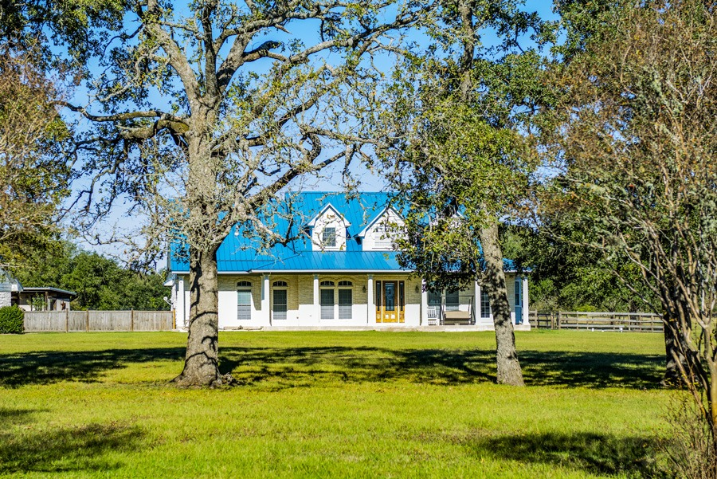

THE WORK BEHIND THE WELCOME / 02
Built around
your community.
Specialized association management with the right balance of structure, responsiveness, and care.
WHAT MAKES US DIFFERENT
Community associations
are our specialty.
Association Services BCS focuses on managing community associations. That singular focus allows us to tailor support to the needs of boards and residents rather than treating an HOA like a conventional rental property.
From comprehensive management to targeted consulting, we develop service arrangements around your community's goals.
COMMUNITY ASSOCIATION MANAGEMENT
Steady operations.
Room to thrive.

From the financials to the fine print, we support the people responsible for leading and maintaining shared communities.
- 01
Financial administration
Budget preparation, financial reporting, bookkeeping, collections coordination, and records.
- 02
Board and administrative support
Meeting coordination, communication, governance support, and documentation.
- 03
Community operations
Vendor coordination, maintenance support, compliance processes, and resident inquiries.
- 04
Flexible engagement
Full-service management, on-site management, financial administration, or targeted consulting.
COMMUNITY DEVELOPER SERVICES
A sound beginning.
A lasting foundation.
We partner with residential developers to support the establishment, operation, and transition of community associations throughout development.
- 01
Formation and administration
Support for association setup, budgets, records, and administrative systems.
- 02
Operational coordination
Architectural, financial, compliance, and vendor coordination as communities grow.
- 03
Thoughtful transitions
Preparation and guidance toward resident-led governance.

A MANAGEMENT PARTNER